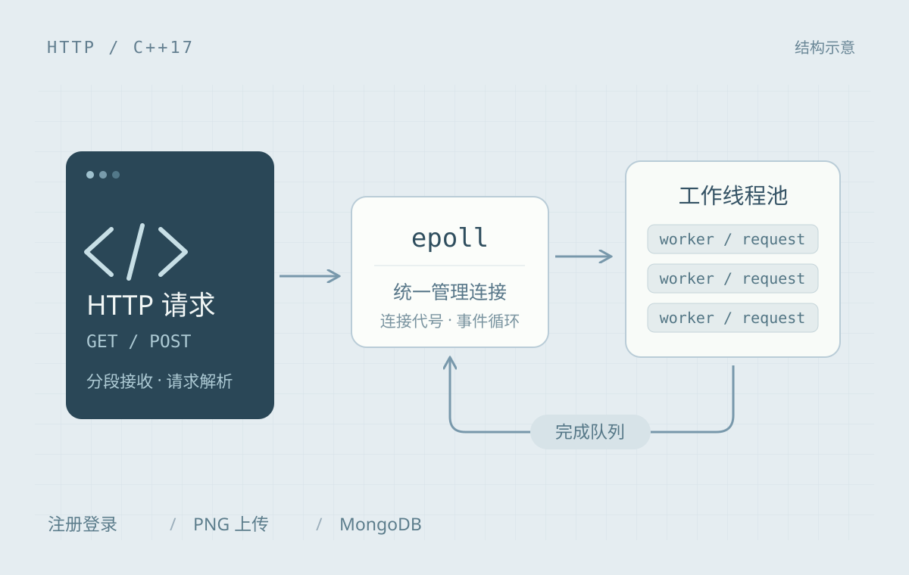

01 Desarrollo de servidores
Servidor HTTP en C++
Sigue una petición HTTP
desde la conexión hasta la respuesta.
epoll gestiona las conexiones y un grupo de hilos procesa las peticiones. El servidor admite análisis incremental, registro, inicio de sesión y carga de archivos PNG.
Código y documentación